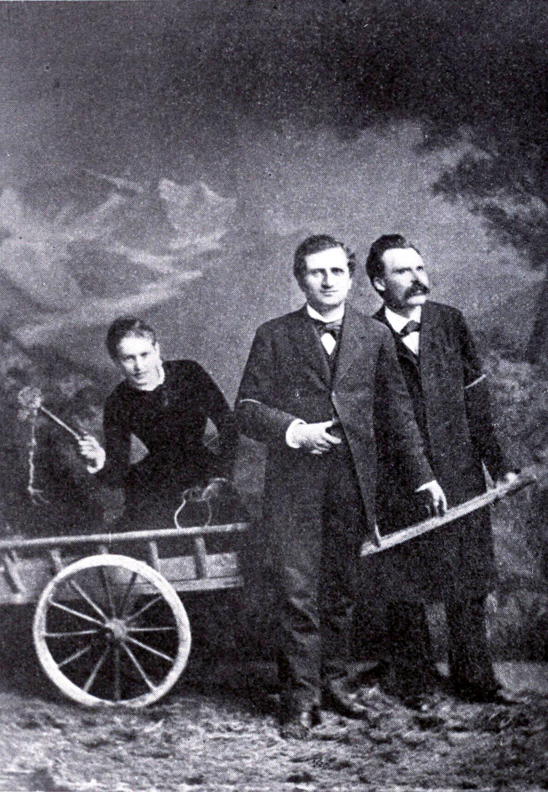

Salomé, Rée, Nietzsche
René Maria Rilke, młody, początkujący poeta, w roku 1897 spotyka na swej drodze Lou Andreas-Salomé — prawie o piętnaście lat starszą od siebie pisarkę o ugruntowanej renomie literackiej.
Lou, osoba wykształcona i znana w europejskich kręgach intelektualnych (jako jedna z pierwszych podjęła niedostępne dotąd dla kobiet studia uniwersyteckie), zasłynęła dzięki esejom, powieściom oraz książkom poświęconym Nietzschemu i Ibsenowi. Była też bohaterką głośnego skandalu, kiedy to odrzuciła starania Nietzschego o jej rękę, po czym — wzbudzając powszechną sensację — spędziła kilka miesięcy wspólnie z nim oraz Paulem Rée, tworząc swego rodzaju ménage à trois. Zrządzenie losu sprawiło, iż ta zamężna już kobieta, błyskotliwa intelektualistka i emancypantka, nie odrzuciła nowego, żarliwego wielbiciela i potrafiła dostrzec w Rilkem tlący się płomyk przyszłego artyzmu.
Słynna fotografia z roku 1882, wykonana w Lucernie w atelier Julesa Bonneta. Na zdjęciu młodziutka Lou Salomé, poganiająca biczykiem filozofów Paula Rée oraz Friedricha Nietzschego.